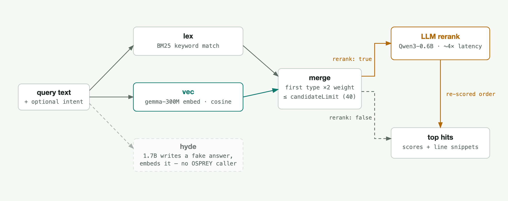
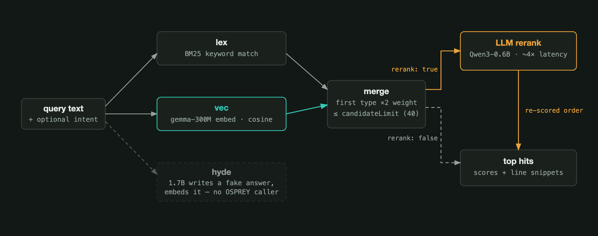

The Search Sidecar (qmd)#
qmd is a service that indexes the deployment’s markdown corpora and
answers hybrid keyword-plus-semantic queries over HTTP. Two parts of OSPREY
use it:
ARIEL’s logbook mirror — the
hybridsearch mode and thehybrid_searchMCP tool;the facility-knowledge (OKF) bundle — its panel and its MCP
searchtool.
One query fans out into a keyword and a vector sub-query, merges them into a bounded candidate pool, and optionally re-scores that pool with a small language model before returning hits:
{kind=link}

Inside one qmd query. rerank and candidate_limit are the two knobs
the configuration below exposes.#
{kind=link}

Inside one qmd query. rerank and candidate_limit are the two knobs
the configuration below exposes.#
The greyed hyde branch ships in the image but nothing in OSPREY calls it.
It is entirely self-contained — its language models are baked into the image,
so unlike the semantic search mode it needs no Ollama on the host — and
the ariel-standalone and control-assistant templates deploy it by
default, together with its two ARIEL consumers (the qmd_export
enhancement module and the hybrid search mode). The OKF bundle needs only
facility_knowledge.bundle_path, which it already has.
The image is built locally, never pulled. osprey build renders
./services/qmd; osprey up builds the image on first run and tags it
<project>-qmd:local, project-prefixed so two OSPREY projects on one host
cannot race for one tag. The baked-in models make that first build about
2.1 GB of download; later runs reuse the local tag. A host with no route to
the internet can supply the models itself — see Building without egress.
Configuration#
services:
qmd:
path: ./services/qmd
port: 10060 # host port clients talk to
interval: 30 # fallback corpus-sweep period, seconds
deployed_services:
- qmd
Those three keys are the whole schema for a host that can reach the internet;
a fourth, models_dir, covers one that cannot (see Building without
egress). Notably there is no ``bind_address`` here — see Where the
sidecar listens below.
Neither consumer strictly needs the sidecar — OKF search falls back to
substring matching and hybrid logbook search reports an outage — so a
deployment that does not want a second index can switch it off. That is three
edits, not one, because any subset leaves either a container nobody queries or
a search mode with nothing to search: comment out the qmd: entry under
services: and the - qmd line under deployed_services:, and disable
both ariel.search_modules.hybrid and
ariel.enhancement_modules.qmd_export.
interval is a ceiling on staleness, not the usual lag: a corpus writer
touches a .qmd-touch marker file and the sidecar re-indexes within one poll.
The interval only catches writers that forgot to touch it. Raise it on a large
corpus — a sweep that finds nothing changed still costs about 12.5 seconds at
135,000 documents, so the 30-second default leaves the loop busy roughly 42% of
the time discovering nothing.
Building without egress#
Downloading the three model files is the one step of the image build that
reaches the internet, so on a host without egress the build stalls there.
models_dir names a host directory that already holds those three files:
services:
qmd:
path: ./services/qmd
models_dir: /opt/qmd-models # absolute path, three GGUF files
One key does both halves of the job — the build skips the download, and the directory is bind-mounted read-only where the image expects to load models from. Setting only one half would leave the container with no models at all, which is why it is a single key rather than two.
Skipping the download does not skip verification, it moves it: the checksums travel with the image, and the entrypoint checks all three files on every start. A missing or misnamed file is refused before compose runs, by a deploy-time check that looks for the three expected filenames — rather than surfacing an hour later as a container that never became healthy.
What gets mounted#
Each corpus is bind-mounted read-only into the sidecar at
/corpus/<collection>, and the same list generates the sidecar’s collection
config — so a corpus can never end up mounted without a collection, or
declared without a mount. Read-only is deliberate: the sidecar indexes these
trees, and everything that writes them lives outside the container.
Collection |
Source |
Present when |
|---|---|---|
|
|
the bundle path is set |
|
|
the export is enabled and names a path |
The index itself lives in a named volume rather than a bind mount. It is derived data the sidecar owns end to end, it is large, and rebuilding it costs about 41 minutes at ALS scale — which is precisely why it must survive a container recreate. The service’s health check allows a one-hour start period for the same reason: the sidecar refuses to open its port until the index is built and provably non-empty, and a container that is working correctly should not be reported unhealthy for most of its first hour.
Disk footprint#
Measured against a real 134,996-entry ALS logbook:
Component |
Size |
|---|---|
Markdown mirror (logical) |
41 MB |
Markdown mirror (allocated on disk) |
553 MB |
qmd index |
695 MB |
Total per 135,000 entries |
1.25 GB (~925 MB per 100,000) |
The gap between logical and allocated size is the point to budget for: the mirror is one small file per entry, so it is dominated by filesystem block overhead rather than by content. Chunking is close to 1:1 for logbook micro-documents (2,000 documents produced 2,001 chunks), so the index grows with entry count rather than with entry length.
Where the sidecar listens#
The sidecar publishes 10060, its slot in the deployment’s port layout
(Ports); the block’s port key pins it somewhere else if you
need that. qmd’s own daemon runs on 8181 on the container’s internal
loopback and is fronted by a small forwarder. That split is
not cosmetic: qmd hardcodes a loopback-only bind with no option to change it,
which makes it unreachable from any other container. Only the forwarder owns a
routable port.
Warning
The sidecar has no authentication. No token, no TLS, no per-caller identity — it answers any request that reaches it, over the whole indexed corpus. That is safe exactly as long as only this host can reach it.
This is why bind_address is not a services.qmd key. Like every
other service, the sidecar publishes on the project-wide
deployment.bind_address (default 127.0.0.1), so a deployment cannot
put an unauthenticated search endpoint on an interface the rest of the stack
is not already on. Moving that one key off loopback moves this service too.
See also
- Container Deployment
The container-deployment mechanics shared by every service — the build/up lifecycle, image overrides, network binding, and the
.envchain.